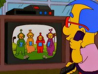

Teletubbies
 De: La Frikipedia, la enciclopedia extremadamente seria.
De: La Frikipedia, la enciclopedia extremadamente seria.
| De la serie Elementos químicos:
|
|
|
| Nombre oficial:
|
Los Telepputies
|
| Otros nombres:
|
Tinky Winki, Dipsy, Laa Laa y Popó
|
| Serie alquímica:
|
Sexo en Nueva York
|
| Descubridor:
|
Cristóbal Colóny Milhouse
|
| Color en tabla:
|
Los mismos que los de la bandera gay
|
| Presente en:
|
Tienen tele LG de 100 pulgadas cada uno
|
| Usos:
|
Ver pelis guarras en su dicha tele
|
| Estado:
|
En orgía total
|
| Peso kg/puñao:
|
Alto
|
| Estructura:
|
Anormal disfrazado con una antena
|
| Abstracción:
|
Abstracción
|
| Humungoso:
|
Y gangoso
|
Los Teletubbies están casi íntegramente compuestos de Escreta (elemento 81 de la Tabla periódica), además de grandes cantidades de Putilio y caca de vaca, y también se drogan con sales de baño, maría y cocaína.
Historia
Hace mucho tiempo, en una galaxia muy muy lejana (sí, más lejana que la de Star Wars si eso piensas) vivían unos seres malvados bajo la apariencia de seres muy buenos llamados Teletubbies. Su planeta fue invadido por Chewbaka, E.T., los EEUU y, finalmente, por Alf con ayuda de khang y kodos (los de los Simpsons). Este trió fue el único en tener éxito en su invasión y dichos seres malvados tuvieron que abandonar su planeta e intentar conquistar otro, al final encontraron uno, la Tierra, en los que los habitantes se estaban destruyendo unos a otros y al planeta mismo, así que decidieron que sería fácil terminar de destruirlo.
Una vez elegido el objetivo, sólo tuvieron que idear un plan para dominar el mundo, dado que un año teletubbie equivale a 10 humanos (ya que lo repiten todo muchas veces, y son más lentos), no tenían mucha prisa en conquistarnos, sus planes sobre todo se basaron en los niños, enviaron un comando con los Teletubbies más duros y despiadados, de esos que cuando vas solo por un callejón oscuro rezas para no encontrártelos.
Miembros del Comando
 Famoso fan de los Teletubbies
- Tinky Whisky: El miembro morado del grupo es gay, muy muy gay. La razón es: ¿Por qué un muñeco morado, claramente del sexo masculino, lleva un bolso rojo y baila ballet?, sobre su cabeza lleva un figura de triangulo que utiliza como coño postizo para que papá Tinky Winky le meta su enorme teletubbirabo y le haga sentir un enorme placer que haga que todos sus hermanos se hagan más poderosos para poder dominar el mundo de manera más fácil.
- Dipsy cabeza de polla: El miembro verde del grupo es mortal en el uso del pincho que tiene en la cabeza, y es silencioso como un avestruz en época de celo. De este teletubbie también se puede comentar que es ecologista y visita McDonald's, de ahí su color y su gran afición a coger plantas e insectos para investigarlos minuciosamente. Este es el único teletubbie del que no se ha podido distinguir el sexo, ya que con sus estancias con las mariquitas se ha podido volver hermafrodita.
- La-la-la-laputamadre: El miembro amarillo del grupo tiene en su cabeza un chirimbolo que en realidad es un rayo láser capaz de desintegrarte antes de que parpadees. También es usado por Tinky Whisky para otros fines relacionados con la puerta de atrás no descriptibles en esta página, también tiene una pelota gigante que usa de bola china.
- Po pó: El miembro rojo del grupo, cuyo poder reside en su dominio de las artes marciales, puede hacer la rueda lateral y casi le sale el pino (un logro en su planeta). Su frase “Po ya está limpio” hizo furor entre los niños.
- Nunu: Este miembro aspira todo lo que encuentra por el suelo, tanto si son granitos de arroz, mierda en especial e incluso tubbiepanes. Es rojo por que los niños que aparecen en sus barrigas, cobraron vida en la m***** de serie y le inflaron a hostias por ser homosexual y feo.
Desde pequeño Nunu fue con chico el cual no tenia apoyo ni de las chicas, por lo que no lo pudo soportar y comenzó a buscar otros métodos para divertirse, como es de empezar a aspirar todo lo que se encontrase, además de organizar un complot contra las chicas que le habían marginado, principalmente con granos de arroz, su propósito sería tirárselos a la cara y así que sintieran lo mismo que sintió él.
- Doraemon: Ex-miembro y co-fundador, abandonó al grupo después de descubrir que Jojita era transexual.
- Jojita: Hembra dominante del grupo, se tiró a todo lo que se movía, tenía también una relación muy seria con Doraemon, pero a su vez tenía un amante secreto, Po. Doraemon se enteró de esto y retó a Po a una guerra de escupitajos, de la que Po salió vencedor. Jojita era transexual, de lo que se dieron cuenta demasiado tarde, Jojita tuvo un hijo al que llamó Jojón el Furioso, ya que nada más nacer se cayó de la cama y empezó a atacar a todos.
- Bill Gates El malvado creador de la serie. Se dice que un día quiso crear unos bichos con los colores de su logo Windows y le salieron estos bichos con mensajes subliminales para que los niños se induzcan a Windows.
- Edward Cullen (también llamado Eduard Cul(l)ón): Es un "purpurineador", que dice ser vampiro, y que aparece en los libros y películas de crepúsculo. Se dice que es gay y trata de aparentar heterosexualidad intentando tirarse a la lunni Bella Swan. Es algo rarito y no se mezcla con la gente, ya que dice que es muy peligroso para la gente estar cerca suyo, o que ya que es "peligroso" la gente le repele. Pero si se me pide opinión, creo que es porque en realidad es gay y ningún hombre le presta atención, mientras que todas las mujeres van babeando detrás suya (dicen que se las ha tirado a todas). Es de vital importancia no confundir a este grupo con el Equipo A. Es un "vampirito" que brilla en la oscuridad y que gusta de usar condones fosforescentes.
- El Sol: Nombre por el que se conoce a un sol con cara de bebé. Éste es sin duda quien dirige los planes malvados del grupo. En su afán por dominar el universo, ha intentado conquistar planetas tales como Tatooine, Coruscant, Namek, Vegeta, e incluso el planeta del que proceden los Pokémon, pero sus planes siempre se han visto frustrados por grandes (o no tan grandes) héroes. Adopta el rostro de un niño para ganarse la confianza de éstos, pues tiene el don de cambiar de aspecto. En su forma original se dice que es un teletubbie gigante, de color negro, con cara de malo, con una antena que produce explosiones nucleares (Hiroshima y Nagasaki) y tiene forma de “Y” y con la risa malvada propia que poseen los grandes villanos. Su verdadero nombre es “El Gran Rey de los Teletubbies”. La forma más fácil de acabar con él es acercándole una aspiradora (los teletubbies son alérgicos a la limpieza).
Las ondas sonoras de los altavoces son capaces de controlar a los teletubbies inferiores, pero no al Sol. En cambio, éste teme a los Lunnies, su especie rival (de hecho, han pensado hacer una película estilo “Alien vs. Predator” con los Lunnies y los Teletubbies).
Planes de Ataque
- Infiltrarse en un programa de televisión y hacer una serie que aburriese tanto a los niños que estos se suicidasen y la humanidad se quedara sin descendencia.
Fracasó: Resultó que a los niños les encantó el programa.

Sí, ellos tienen creencias emo.
- Intentar hacer que el héroe de los niños fuese un Teletubbie gay, para intentar que todos los niños se apareasen unos con otros y no tuvieran descendencia.
Fracasó: Hubo un fuerte aumento de gays, pero los niños no son tontos y como todo el mundo sabe tiran más dos tetas que dos carretas.
- Vender Tabinatillas, que en realidad contenían semen de Teletubbies. Eran una tapadera para que crecieran Teletubbies dentro y utilizaran el cuerpo de los niños (en plan “The Faculty”) y que en el día D a la hora H salieran todos a la vez.
Fracasó: No se vendieron casi tabinatillas porque se pusieron de moda los lunnis y los niños no volvieron a hacer caso a los Teletubbies, pero todavía hoy entre nosotros hay muchos Teletubbies camuflados, entre ellos gente famosa.
- Hacer un complot para acabar con todos los niños y los adultos, quedándose únicamente ellos en el poder, y así poder tener la fuerza (ya que no tienen) y la astucia para gobernar el mundo.
- Intentaron hacer que los jóvenes se quedaran todos los días en el sillón.
Fracasó: En el ensayo se quedaron pegados porque son de velcro.
- Llegar a pokemonizarse en Pikachu, Miltank, y demás parias.
- Coger el tubo de su mega aspiradora y sorberse los huevos.
- Conquistar el Digimon world haciéndose pasar por Megawargreimon para conseguir el control de un montón de bestias que ni Diox conoce, pero que según un montón de niños fumetas y con epilepsia ven cada vez que miran a un cartel que parpadea con colorines.
Otros datos
- Los teletubbies que quedaron sin planeta tras ser conquistados por ALF, se esconden en la otra cara de la Luna, desde donde observan el planeta por medio de televisores de plasma LCD gigantes que les fueron proporcionados por Bill Gates.
- Los penes que tienen en la cabeza son mágicos, y pueden lanzar Ha-Do-Kens y Ondas Vitales.
- Los últimos estudios han determinado la posibilidad de que uno de estos entes, en su variante plavi-balkanika, se dedique a jugar al baloncesto en Vitoria.
- Se sabe que los teletubbies tienen una estrecha relación con Barney quien les proporciona las drogas para salir en televisión.
- También tienen una gran relación con los miembros de Plaza Sesamo... Especialmente con Elmo (el rojo).
- Se sabe, pero no hay suficiente información recaudada, que ha afirmado que tiene toda una programación porno en su tele integrada a su cuerpo.
- También han sido vistos en Catalunya haciendo estatutos con Carod Rovira.
- Hay estudios que confirman que han cambiado de forma y ahora son los pelochos.
- Algunos afirman que fueron los creadores de la serie “Plaza Sésamo” que traumatizó a millones de jóvenes en el siglo XVIII, para así ir preparando el camino para su llegada, puesto que por aquel entonces los niños aprendían a luchar contra razas invasoras viendo series como Dragon Ball, lo que dificultaba el plan de invasión de los Teletubbies.
- En el segundo capítulo de la primera temporada, en el frame 2856, se puede apreciar en la pantalla de Lala la imagen del BSOD, aunque desaparece en apenas un segundo.
- Según estudios recientes, existe un teletubbie que es más poderoso que todos los teletubbies juntos, le llaman Megatubbie.
- También se dice que Megatubbie siempre va acompañado de Adolftubbie, un teletubbie que intento conquistar España años atrás.
- Se dice que, para reproducirse, solamente se necesita un teletubbie macho y otro hembra. Pondremos de ejemplo a Dipsi de macho y a Po de hembra. Por el agujero que tiene en la cabeza po se pone el "palo" que tiene en la cabeza Dipsi, así de fácil.
- También existe el rumor de que dentro de pocos años aparecerá el legendario Super Teletubbie, que tendrá una super tele de plasma en la barriga en la que se podrá ver la TDT y jugar a la Play 4, y gracias a ella podrá derrotar a Alf poniéndole todos los capítulos del “Tomate”, “Corazón Corazón” y las noches X del Canal+ y cosas del estilo, recuperando así su planeta.
- Se dice que antes había un jefe de los Teletubbies, pero los Lunnis lo mataron clavándole su propio cuerno en la pantalla de la tele, por lo que la serie de los Teletubbies tuvo que dejar de emitirse durante un tiempo, ya que el técnico que habían contratado tardó 6 meses en llegar.
Imagen reciente de Po, donde se ha vuelto emo y asesino.
Curiosidades
- Fueron creados por Freddie Mercury y Angus Young para resucitar a Bon Scott y al mismo Mercury.
- Son parientes de Dengakuman y de Nacho Vidal.
- Buenos amigos de Hugo Chavez, Alvaro Uribe y George Bush.
- Cada uno tiene un cuarto oscuro donde realizan...
- El sol con cara de niño es el hijo de Michael Jackson y de Stan Smith.
- Los lunnis hicieron ofensivas en varias ocasiones contra los teletubbies, todas fallidas, ya que el sol con carita de bebé feliz (el personaje que maneja el cotarro), lanzó con un lanza granadas una granada a Lupita... Lucho, perplejo ante la situación que estaba observando, se acordó de la madre del sol con carita de bebé feliz y cogió su móvil de última generación y llamó a Bud Spencer, amigo suyo desde la infancia, y en menos de 0,0001 segundos, el universo entero estaba destruido.
- Esos televisores que tienen en la barriga se los metieron por el culo cuando nacieron para ver porno, por eso se llaman teletubies (o pornotubies).
Notas
Ahora mismo los Teletubbies están planeando convertir a los adultos en niños intontizados para construir un súper ejército que destruya a los lunnis para vengar a su teletubbie jefe y también piensan matar a todos sus enemigos, así que ten cuidado, Barney.
¿Qué hay de su vida?
como dice aquí tristemente murieron, los Teletubbies, esos muñecos gigantes de colores y con aspecto de extraterrestres se colaron durante años en nuestras pantallas a base de reposiciones. Curiosamente en la BBC, su cadena original, los sacó, pero lean la verdad:
Tinky Winky (1997-2001)
Era la estrella indiscutible e iniciaba siempre los juegos sacando objetos muy diversos. Con una antena en forma de triángulo invertido (curiosamente el símbolo LGTB por excelencia desde la época nazi) y un bolso rojo, no tardaron en tildarlo de gay. Sus excéntricos bailes y esos ademanes "femeninos" tampoco le ayudaron a ser aceptado. Incluso, la Defensora del Menor en Polonia intentó investigar si fomentaba la homosexualidad, aunque se topó con el rechazo de la Comisión Europea. Ahora, ¡nadie pudo con él! Detrás de esa imagen sensible, se encontraba un recopilador de audiencia aunque a los productores les dio muchos dolores de cabeza. Y tres fueron los actores que asumieron el papel.
Murió en el medio de la pobreza ya que cerraron el programa.
Laa-Laa (Amarillo) (1997-2001)
Con Laa-Laa pasaba justamente lo contrario que con Tinky Winky. Representaba la figura maternal y, tanto para padres como para niños, sus cánticos y sus bailes eran adorables. Hay que recordar también que tenía una antena rizada y una pelota gigante. La actriz que la interpretaba, Nikky Smedley, es una experta coreógrafa y trabaja actualmente en estrecha colaboración con las autoridades británicas para fomentar la danza entre los más pequeños.
Se dedicó a la prostitución murió violada, con el culo abierto en panamericana.
Dipsy (Verde) (1997-2001)
El "chico heterosexual" era el más cabezón y ponía la nota rebelde, llevando casi siempre la contra a sus amiguitos. Su varita empinada quizás también tenía mensajes subliminales, aunque nunca recibió críticas. Por su tez oscura, los creadores de Teletubbies siempre sostuvieron que era de "raza negra".
Murió en una explosión, el tonto uso la aspiradora para limpiar el horno prendido explotó y murió osea esto confirma que la propiedades de ellos quedo para Dispsy pero no sabia usarla por eso ocurrió esto, así que su aspirada también murió.
Noo-Noo (1988-2001)
La aspiradora con propia vida que compraron los teletubbies no era buena era usada, esta quedo en propiedad de Dispsy, el cual no la supo usar y murió junto a el su amigo fiel el que la compró.
Po (Rojo) (1997-2011)
La más pequeña de los Teletubbies poseía una antena redonda para hacer burbujas de jabón. De origen chino y bilingüe (al hablar inglés y cantonés), su objeto favorito era una moto que bautizó como 'Po Cooter'. Sin duda, era la más traviesa del grupo y en muchas ocasiones desobedecía las órdenes que marcaba el sonido de la trompeta. Se suicidó tirándose de un tren por un amor, mejor dicho un triangulo amoroso Po era amante de Mickey y dijo "Deja a la puta de Minnie o me mato" y el dijo "Más puta tu abuela tengo más de 50 años en este amor." y allí murió también parece que Mickey tiene hijos en secreto con Minnie o un hijo con Po este chimento no se sabe bien
Según Un chimento de Jufi Ratatuille y el ratón Perez entraron en Disney porque son los hijos de Mickey y Minnie, y confiesa que hay un quinto teletubbie (cuyo está en un orfanato) el hijo de Mickey y Po, osea fue la última en morir.
Preguntas obvias
- ¿Dónde se halla el país de los Teletubbies?
- ¿Por qué nunca se dice la situación exacta? ¿acaso se trata de una base secreta donde se realizan experimentos genéticos o quizás abusos de niños con discapacidad?
- ¿Son los teletubies el primer invento de Flyppy? (Tienen un gran parecido con las
putas de trankas i barrancas)
- ¿Son los Teletubbies el resultado de tales experimentos?
- ¿Por qué llevan un televisor en la barriga? ¿Es este aparato parte de su organismo o un injerto posterior?
- ¿Por qué los Teletubbies salen de su casa y se vuelven a encerrar cuando unos altavoces ocultos aparecen y se lo ordenan? ¿A qué clase de dictadura están sometidos?
- ¿Son niños estos seres? Si lo son, ¿dónde están sus padres? ¿Por qué parecen haberlos abandonado? (Este hecho refuerza la tesis de que los Teletubbies son seres creados en un laboratorio.)
- Si no lo son, ¿por qué siempre están jugando? ¿Acaso no saben que el trabajo ennoblece?
- Si no trabajan, ¿de dónde salen sus viandas? ¿Cómo es que nunca los vemos comprarlas? ¿Salen del mismo laboratorio en el que fueron creados los Teletubbies?
- ¿Son las chispas que surgen del gigantesco molinillo en realidad una droga? Eso justificaría que los Teletubbies tengan alucinaciones en las que aparecen niños reales. Si no lo son, ¿por qué siempre son tiernos infantes los que salen en estas secuencias? ¿Tratan de decirnos que los niños están encerrados en sus panzas, cual pequeñas presas devoradas por monstruos de cuento infantil? ¿Es un mensaje subliminal para que los niños crean que su vida transcurre en el interior de los Teletubbies?
- ¿Por qué los únicos animales vivos que podemos ver son conejos? ¿Por qué no se ven más de cuatro? ¿Es que son uno por Teletubby? ¿Quiere esto decir que los usan como objetos sexuales? ¿Serán por el contrario los conejos quienes controlan a los Teletubbies?
- ¿Estarán preparando una invasión? ¿Es la enorme cantidad de conejos que hay en Australia un primer intento de la conquista de la Tierra? ¿Son por el contrario los conejitos de las pilas que hemos visto anunciadas?
- ¿Desde cuando el sol es una cabeza de bebe?
- ¿Son caníbales? Porque en vez de llamarse natillas se llaman tubbienatillas.
Ver también
Autor(es):
- Krusher
- Nexo
- Fordus
- Hari Seldon
- Mastro
- Anxova
- Kenedhor
- Chusma
- Haakjvork
- Doctor grijander
Frikipedia 2005-2016, Licencia
GFDL 1.2 - Extraído por FrikiLeaks